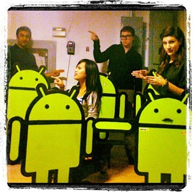
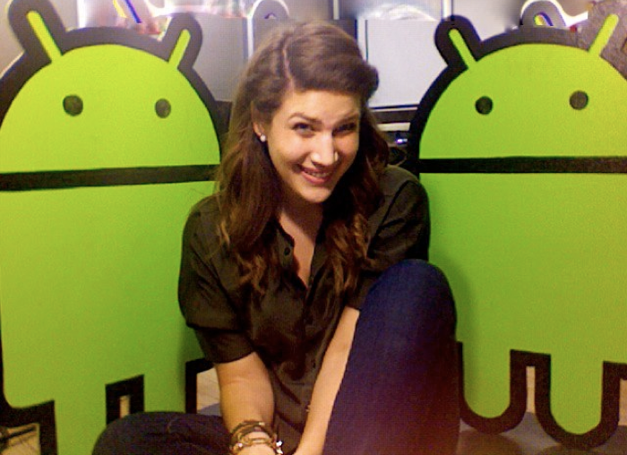

Constant Motion::
Saturday, January 14, 2012
Have you ever poured your heart and soul into something, then stepped back and appreciated the journey you took to get there?
I think moving ahead is what keeps us going... but looking back shares a perspective of humility and growth. In grade 8, I went to the Calgary Science Centre and learned about connecting star and constellations. I loved the concept of understanding the history of stars to treasure the beauty of the greater picture they created. So that when I looked up to the sky, I wouldn’t simply see a sheet of black with random lights but rather, something of meaning and purpose. Life has star like moments. Some are bright, others are as black as holes.... but collectively, they form a story... and if you don’t look back, you miss the connection and appreciate how each piece contributes to a greater story of you, your life, and overall being.
Saturday’s are my day to reflect on the week and put in to perspective what I learned from each company that has been apart of ProjectONE12. I know I say this alot, but I am so grateful for these companies who gave me a chance, and supported what I am hoping to achieve. When I look back to September, I see how each job, each boss, every project and every monday.. I gained more confidence in myself and the direction I wanted to go, I can’t help but get excited for what will happens next. :)
Job #9 was in Toronto working at BNOTIONS with some pretty  amazing people. They’re a medium-sized agency that creates social apps, websites and API products for clients across North America.
amazing people. They’re a medium-sized agency that creates social apps, websites and API products for clients across North America.
One of Toronto’s fastest growing tech companies, they bring together some smart, passionate, and involved individuals to do some really cool things.
It was definitely a different “first-day-of- work” for me. First off... I didn’t start until “10-10:30am”. So on my first day, I woke up at like 6 or 7am... and realized I still had a ton of time to sleep or do things... but I was awake (from habit) and of course... nervous for my first day, so I got up and got ready to go. Then I arrived to the office early.. and waited until 10:01am to walk in the door (because... I didn’t know what the appropriate time would be to come... 10:10.. 10:15... 10:20am). I go up the elevator... the door opens ... and then the entire office just starts clapping..... I stood there... like a deer in the headlights... in shock... I thought they made a mistake or I was being punk’d .... so I took a step back to go back in the elevator because I had no idea what else to do... when the “office mom”, Ozzy, greeted me and welcomed me to the office.
I got settled in my desk and 5 min later the next person walked through the elevator doors and the whole office started clapping again! :) A BNOTIONS quirk is clapping for everyone! As the week progressed... I think I was by far the most excited person to start the welcome committee for people as they came. Clients would come in, couriers, or employees and as soon as the elevator door opened it was this high energy clap that filled the room making everyone feel good. I smiled every time and loved watching the reactions of the guests. I can only assume how ridiculous I looked. :)
A welcoming first day followed by a hospitable week - everyone in the office treated each other as family and I was so lucky to be apart of that, even though I was only there for a short time.
For the greater portion of ProjectONE12, I would work during the day, then go home and work on personal project stuff in the evenings. But what made this time in Toronto special was the BNOTIONS team took me under their wing during work hours to share with me what they do, and also

took the time to hang out with me after hours which made me feel like I was a part of the family too. Good people really make a difference and when you are surrounded by a group of them .... its hard not to have fun.
I worked late often because I got to help with random projects of other companies who were sharing the space, but what I really appreciated was talking with my new friends who shared insight to what kind of roles non-technical people have in the industry.
I know technology is the space I want to be in after this project is done, but as far as the role I am looking for, still an area I am trying to define. Something my mentor always told me was to “be specific”. So with all this new knowledge, and focus I have gained, I am approaching my last job with the mindset: what do I want to do, what can I do, and where do I hope to go.
It has been one adventure, and feels like 9 years worth of knowledge in 4 short months. Although my last company cancelled, I am still going to finish the 10th job outside of the original time frame of 112 days. January 20th is suppose to my final day of the project... so I had arranged back in September to take a team to Mexico and build a house for a poor family. I leave next Friday and am going to finalize my last job once I return in February.
I’ve worked the last 4 months to reach this point, and the goal is to complete 10 jobs as part of the project. It was stressful last week.. but I want to finish what I started the right way and with meaning behind it. :)
Life is always under construction and its our job to learn how to untangle the threads and weave a tapestry that meets our desires. -- Dannye Williamsen
one week left, and one new adventure to come.
Thank you so much for reading. I am so grateful for the support. :)
Just Maeghan.
You can visit facebook for all the pictures of the project.
